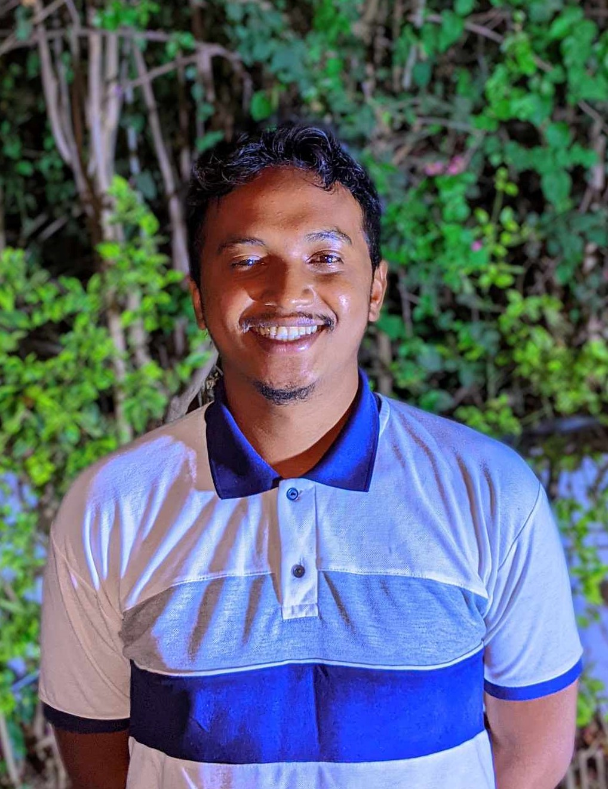

RATSIMANOHATRA Faniry D. Rinah

Summary
Holder of a Master's degree in Macroeconomics and Public Economics and currently undergoing training in a data science lab.
I am passionate about digital economy. With significant professional experience as a statistical research analyst,
showcasing strong analytical skills and understanding of data, I aspire to gain meaningful experience in the field of data science.
Work experience
April 2022 - Juin 2023
- Preparation, analysis, and verification of statistical data
- Regular transmission of statistical reports
- Development of customs clearance KPIs
- Monitoring of customs clearance activities deadlines
Education
- Online training in data science | WorldQuant University (undergoing)
- Germany language course | Goethe Zentrum | level B1 (undergoing)
- Certificate obtained : A1
- French language course | Alliance Française de Tananarive (2022)
- Diplomas obtained : DELF B2 and DALF C1
- Economics study | Macroeconomics and Public Economics | Université Catholique de Madagascar (2016 - 2022)
- Diploma obtained : Bachelor and Master's degree in Economics
- English language course | English Teaching Program (2022)
- Certificate obtained : Advanced Two Certificate (C2)
Skills
- Microsoft Office Suite : ⭐️⭐️⭐️⭐️
- SPSS : ⭐️⭐️⭐️⭐️
- EVIEWS : ⭐️⭐️⭐️⭐️
- Power BI : ⭐️⭐️⭐️
- Python : ⭐️⭐️⭐️
- Sphinx : ⭐️⭐️⭐️
- HTML : ⭐️⭐️⭐️
Language
- Malagasy : Native language
- French : Proficient
- English : Proficient
- Germany : Intermediate
Other